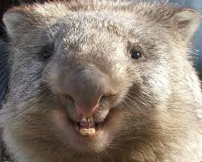
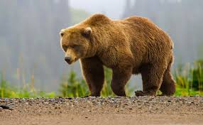
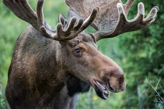

Wombats are short-legged, muscular quadrupedal marsupials that are native to Australia. They are about 1 m (40 in) in length with small, stubby tails. There are three extant species and they are all members of the family Vombatidae. They are adaptable and habitat tolerant, and are found in forested, mountainous, and heathland areas of south-eastern Australia, including Tasmania, as well as an isolated patch of about 300 ha (740 acres) in Epping Forest National Park[2] in central Queensland.
The grizzly bear (Ursus arctos ssp.) is a large subspecies of brown bear inhabiting North America. Scientists generally do not use the name grizzly bear but call it the North American brown bear. Multiple morphological forms sometimes recognized as subspecies exist, including the mainland grizzly (Ursus arctos horribilis),Kodiak bear (U. a. middendorffi), peninsular grizzly (U. a. gyas), and the recently extinct California grizzly (U. a. californicus†)[1][2] and Mexican grizzly bear (U. a. nelsoni†). On average bears near the coast tend to be larger while inland grizzlies tend to be smaller. The Ussuri brown bear (U. a. lasiotus) inhabiting Russia, Northern China, and Korea[3][4][5] is sometimes referred to as the black grizzly, although it is a different subspecies from the bears in America.
The moose (North America) or elk (Eurasia), Alces alces, is the largest extant species in the deer family. Moose are distinguished by the broad, flat (or palmate) antlers of the males; other members of the family have antlers with a dendritic ("twig-like") configuration. Moose typically inhabit boreal forests and temperate broadleaf and mixed forests of the Northern Hemisphere in temperate to subarctic climates. Hunting and other human activities have caused a reduction in the size of the moose's range over time. Moose have been reintroduced to some of their former habitats. Currently, most moose are found in Canada, Alaska, New England, Fennoscandia, Baltic states, and Russia. Their diet consists of both terrestrial and aquatic vegetation. The most common moose predators are the gray wolf along with bears and humans. Unlike most other deer species, moose are solitary animals and do not form herds. Although generally slow-moving and sedentary, moose can become aggressive and move quickly if angered or startled. Their mating season in the autumn features energetic fights between males competing for a female.
